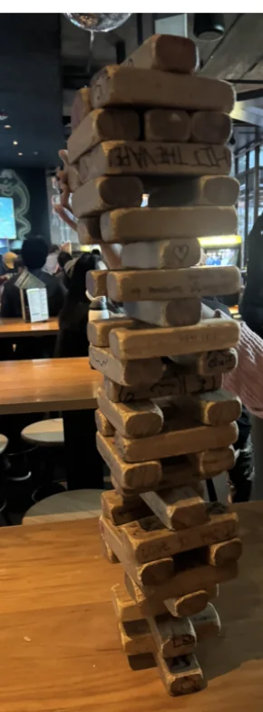
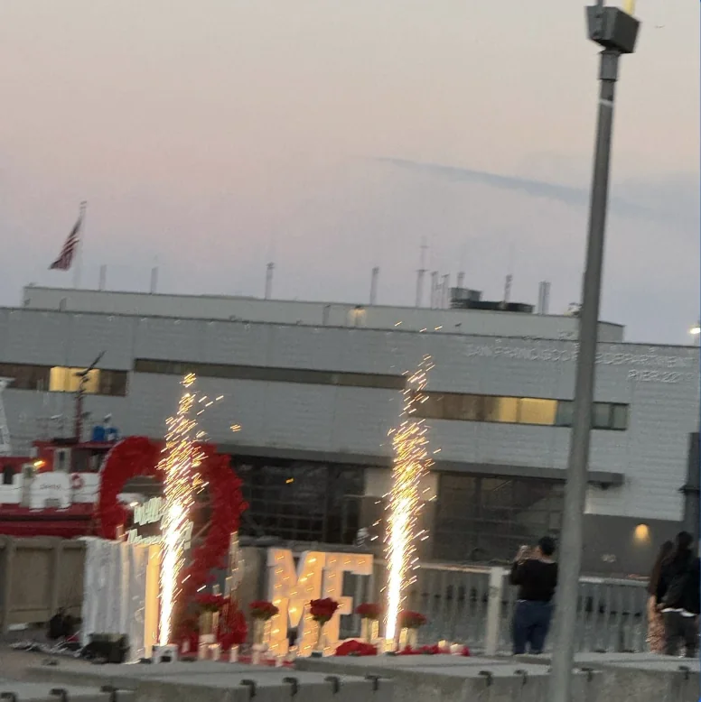
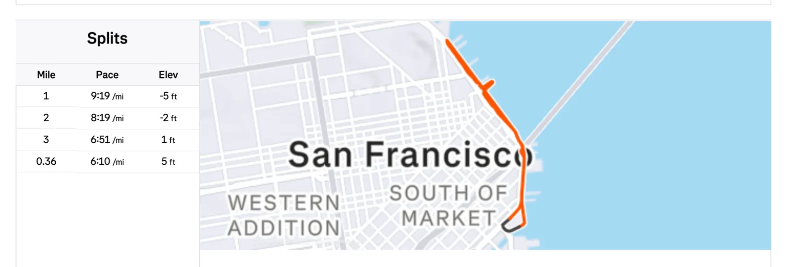
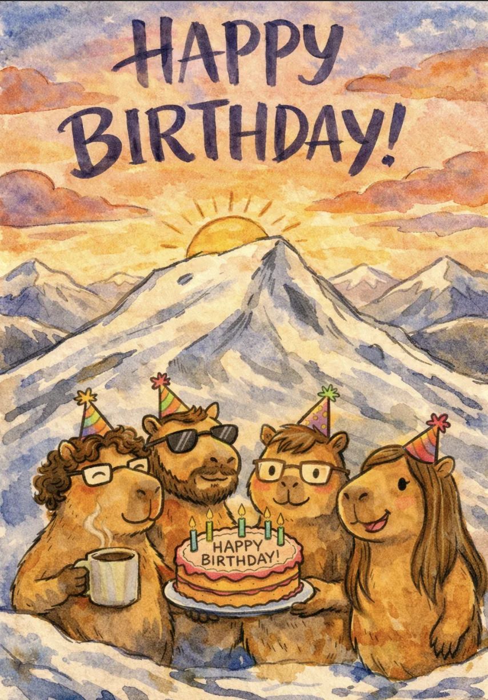

Shoutouts
Happy birthday to “The Philosopher”. We’ve had some fun adventures and many long walks. I really appreciate all the advice you’ve given and your interest in doing many kinds of off the beaten path activities. I’ve learned a lot about fashion and normative behavior from ya. Or you know, “something like that”.
Happy birthday to “That’s nuts”. You’re a really supportive and earnest person and I appreciate ya at the Thursday bar nights. I remember there was one night in particular you were really hyping me up and it touched me.
Shoutout to “The Politician” for launching a newsletter called city smart dedicated to covering the meetings of the SF council and board of supervisors.
Monday
Today after work I was going to go to Mission Run Club but found myself leaving work just 10 minutes too late to join. I caught up with them afterwards though for the post run hang. We went to Detour and me and a couple other people played a game of Jenga where we went quite far and stacked the tower 24 levels high which I think is a record for me.

I’d have liked to stay longer but work is busy this week so I go back and grind some.
Tuesday
Today I just worked and wrote the newsletter. I appreciated the block of quiet time to be able to do this. With all the things I’m up to now its harder to find time for actually writing this newsletter. These days it's mostly relegated to odd weekday mornings and evenings before work.
Wednesday
After work I went to MR with “The Quant” and “Sergeant Sassy”. I learned more about the interview process if I ever wanted to change jobs and work in finance at EY. Apparently it's a really long and drawn out process that can take many months. The hours are also quite brutal but that part I expected a bit more of.
On the run I saw a proposal happen by Embarcadero which was very sweet

Sometimes on these runs I’m torn between hanging out with friends and trying to juice my Strava numbers. On this run I wound up doing a bit of both.

I would have liked to stay for the post run bar hang but … work.
Thursday
After work I swung by one of my favorite matcha places (Oishii Matcha) and talked with the two people who run the shop. One of them is an Algerian guy named Yusuf who got into matcha after getting bored at his previous job (I think it was in business or tech but I’m not sure which). He went to Japan on a whim and got really into matcha and decided to make a business out of it once he realized he could make money from it. He stressed the importance of only making a business out of what you could make money from.
From there I went to bar night with “The Mosher,” “That’s nuts,” “The Finer things,” and “The Twitch Streamer. I talked with one of the regulars there who is also a big runner. He uses Strava but until I mentioned it he didn’t realize Strava was a social app, he was just using it for logging his performances. He had 0 followers until then where I became his first follower and now I can see all his runs :D. For the other regulars wondering who this is, he shares the same name as “The Philosopher” and he works at Joyride Pizza. I would have liked to stay longer than I did but … work. This is an abnormally long week for me on the work front.
When I got home I finished up my work but found myself unable to sleep due to the matcha I had. I suspect it may have been because I didn’t eat dinner; normally I can drink matcha at 7:30PM and be just fine but I don’t usually do it on an empty stomach. This may have led to me posting some results on the company slack at 3:30AM because why not right? At least at this point I finished the big thing I was working towards.
Friday
I managed to get roughly 3 hours of sleep between Thursday and now. Surprisingly I’m rather functional throughout the day. After work I head to “The Philosopher’s” birthday party. He bought out the bar that we usually go to for our Thursday bar night and bought everyone a bunch of food. He brought together a wide assortment of folks including “The Fisherman,” “The Quant,” “The Mosher,” “The Juggler,” “That’s Nuts,” “The Best,” and “The Finer things”. I definitely had more popcorn chicken this night than I did any other night this year. I got him some coffee beans from Verve since he said there are good beans there. I spent a while trying to figure out what coffee related thing I should get for him without making it too obvious I’m getting him a birthday gift (which I ultimately failed at). At first I thought about a piece of equipment with more durability like an aeropress of some sort but I don’t know what coffee equipment he actually has so I figured beans would be the safer choice.
One thing I had been meaning to do but put off was get a new festive hat for myself. “The Twitch Streamer” has been telling me for a while that he misses my unicorn hat and last week I wore a panda hat which was delightful. Almost a year ago, I decided to throw away my unicorn hat when I first started on my journey to improve my fashion. I wanted to show my resolve by getting rid of my old bad habits. Now I’ve come a long way (granted I still have much more to do), so I thought maybe this could be a good time to get a new festive hat. Of course I’ve learned my lesson since then and I’ll only wear it for special occasions and I figure a party like this could be one such occasion.
I also got a matching hat for “The Twitch Streamer” figuring he would also want to wear such a hat and he was delighted by it. I wish I had a pic but we were twin gengaring and it was lovely :D.
There was a birthday card going around for “The Philosopher” I wound up signing

I assume this was made with a combination of “The Philosopher’s” love of capybaras + coffee + his planned snow camping trip. I didn’t make this one though so I’m not entirely sure about it.
One of “The Philosopher’s” coworkers thought that me and “The Quant” were a gay couple. He asked how we met and we said a meetup and then I said “we’ve been together ever since”. Of course I just meant as friends but I guess he interpreted it differently. I forget what he said that made me realize he thought we were a couple but I responded with “The meetup we met at was called Boba buddies. I went for the tapioca but I walked away with some very different balls”.
“The Fisherman” brought a visiting friend of hers who gave me some dating advice largely centered around viewing myself as being worthy and approaching women as being a gift from me to them. If they don’t like it that's cool of course but the point is more so that I shouldn’t feel like I’m being creepy approaching women. One thing that I’ve been grappling with is amidst all the advice I”m not sure I’m actually ready to date yet. I’ve been working on a lot of the advice from “The Philosopher” and “The Fisherman” and they tell me I’ve been making great progress but I still have a lot more to go. For example my arms are still spindly. I’ve started working at the personal trainer but given it's only been two weeks it's not as though I’ve really made great strides yet. My wardrobe is ok but I’m not sure it's great yet. At least I think my first impressions are OK but even still.
Sometimes it feels like there's so much I need to do coupled with my shame for needing so much help on obvious things that sometimes I’m not sure I am ready. Like the fact that I needed such obvious things pointed out to me sometimes makes me feel like I’m garbage. I know that's not a productive way to think. I know what I need to do is focus only on how I was in the past and how I’m only somewhat of a loser now compared to a few months ago which is good progress but still. Sometimes I just feel ashamed of myself and how I’m not the person I need to be yet. I wish I had a good answer to this but it’s something else I have to grapple with on my long road to self improvement that seems to only be getting longer the more I walk it. How do you all manage to be so good at all this stuff? Practice? I guess we shall see what the future holds.
Saturday
Originally I planned to run at Marina Run Club where I did have a brief catchup with “Top of the Rope”, I realized there wasn’t anyone there I really wanted to talk to today and decided doing a walk from Marina to Mission would be more fun I did that instead.
Afterwards I did trash pickup with “The Notetaker,” “The Writer” and others. It turns out a bunch of the people I picked up trash with today are workers with one of “Mr. Greenflag’s” mahjong friends.
Later I went fishing with “The Fisherman,” “The Quant,” the visiting friend of “The Fisherman”, and one of “The Fisherman’s” other friends. This time we did poke pole fishing where you take a fishing rod with bait on it and poke it holes until rock eels come out. My favorite part of this whole exercise is always killing the fish with the rock so that's what I focused on. “The Fisherman” said I needed to be more precise and really go for the head. I need to strike deliberately and hard. In the past my strikes have hit the other parts of the body and because I don’t hit hard I strike over and over which isn’t good. This time I think I got better. What used to take me about 5-6 strikes only took me 2-3 by the end. It would be cool if I could kill one of these in a single strike next time. The problem is they move around quite a bit so it's hard to hit in exactly the right spot for the instakill. As the trip drew to an end the rain started coming down so we made a strategic decision to retreat.
Once I parted ways with them I got a burrito and walked home in some really bad rain. It wasn’t a long walk but it was a brutal one. By the time I got home I just laid in bed for an hour and barely did anything. I had other plans but honestly I didn’t want to get up. I thought about doing something I almost never do and cancel on social engagements to stay home and chill. Thinking about it, would I really be missed at the 40 person birthday party I was only tangentially invited to? Would I really be missed at the big event at the SF library I was last minute invited to? I could easily say something came up, or that I was tired. As a society we’ve come up with no shortage of options to gracefully leave such things. But I take pride in being reliable and showing up to things. I may be garbage but I’m garbage that shows up dammit. So I willed myself out of bed, took a shower and freshened up so I didn’t smell like fish, and I rolled up.
My first stop was the SF Public library for the night of ideas. It’s a party they have at the main branch of the SF library once a year with a bunch of different panels and speakers on different ideas. I saw some friends there at the panel on US-French relations. I have to admit that while I showed up I can’t say the panel was particularly exciting. I wound up coming late so I had to catch up on context. From what I could gather, part of the panel was about UC Santa Cruz cutting language funding for foreign language education with the premise that a lot of business happens in English. Some of the speakers pushed back on that idea countering that while it may be true there is a certain connection of the heart that is lost as other languages aren’t so prominently taught. I quite like that idea personally even though I don’t really know any other languages. At this point the fact that I’m running on 8 hours of sleep over the last 2 nights is starting to take its toll and I decide to head out.
My last stop of the night is a birthday party for a friend at MR. While there I see “Sergeant Sassy,” “The Trivial Pursuit,” and some other MR friends that don’t have nicknames. I talk with “Sergeant Sassy” who describes my style as “Urban tech with a bit outdoorsy”. She mentioned she was discussing the newsletter with some of my other readers which made me feel good. It feels like I’m a weekly manga author except I can’t draw and the grammar and content of my writing are questionable and give diary of a wimpy kid vibes apparently. What am I the next Greg Heffley? The party was angel and devil themed and the main birthday girl had a super cool angel outfit with paper wings which was very stylish. Since she isn’t a named character I’m not doing the beginning of the newsletter shoutouts but she is a very vibrant person who really knows how to have a good time and is always fun to talk to at MR and I hope to see more of her in the future. She also did 30 miles for her 30th birthday which I definitely respect. I stay for an hour before going home and crashing at 10PM. Not my finest work but I made sure to give my birthday wishes, hang out for the atomic unit of an hour, and still come through.
Sunday
The day begins with trash pickup with “The Notetaker”. Due to the rain we have a low attendance today at only 22 people which is far below normal. The pickup itself is an ok but short affair overall. As it turns out Manny’s is being rented out after the pickup for two dog’s birthday party of all things so we get kicked out shortly after the pickup. I have to admit, I find the idea of being kicked out for a dog’s birthday party to be slightly ridiculous but here we are. I can’t exactly say this made me love dogs even more than today. On top of that I saw the dogs and they were these two yappy pugs which like all pugs look like they had a door smashed on their faces.
I go home and do a bunch of admin stuff including taxes which is as riveting as it is soul cleansing. Sigh more money outta my wallet. Then I clean my place and get ready for a potluck I’m hosting.
I invited “The Pickleballer,” “The Taco,” “The Mosher,” “The Menace,” one of “The Meance’s” roommates, and another friend from trash pickup over. I make my lamb pasta which my lamb mentor “The Menace” says has improved. He said it was decent and savory. You hear that “The Philosopher," my cooking is improving :D. That’s rhetorical because I texted him right after I got the feedback, I needed it in the records ASAP. It was a nice time just sitting and hanging out. In the future I am debating just doing a dinner party where either I cook all the food or we order from somewhere so we aren’t thinking a lot about the dessert to dinner balance at these.